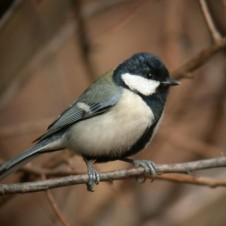

학명은
Parus major

몸길이 약 14cm이다. 머리와 목은 푸른빛이 도는 검정색이고 뺨은 흰색이다. 아랫면은 흰색을 띠며 목에서 배 가운데까지 넥타이 모양의 굵은 검정색 세로띠가 있어 다른 박새류와 쉽게 구분된다. 수컷은 이 선이 더 굵고 다리 위까지 이어진다. 등은 잿빛이다.
평지나 산지 숲, 나무가 있는 정원, 도시공원, 인가 부근에서 흔히 볼 수 있는 텃새이다.
4-7월에 나무 구멍, 처마 밑, 바위 틈, 돌담 틈 또는 나뭇가지에 마른 풀줄기와 뿌리·이끼 등을 재료로 둥지를 틀고 한배에 6-12개의 알을 낳는다. 특히 인공 새상자를 좋아해서 크기만 적당하면 정원에서도 둥지를 틀고 새끼를 기른다. 번식 초반인 3월부터 울음소리를 들을 수 있다.
한국에서는 숲에 사는 조류의 대표적인 우점종이다. 곤충을 주식으로 하며 가을부터 겨울에 걸쳐 풀이나 나무의 씨앗을 주워 먹는다. 번식기가 지나면 무리생활을 하는데 쇠박새·진박새·오목눈이 등과 섞여 지낸다.유라시아 전역에 분포한다.